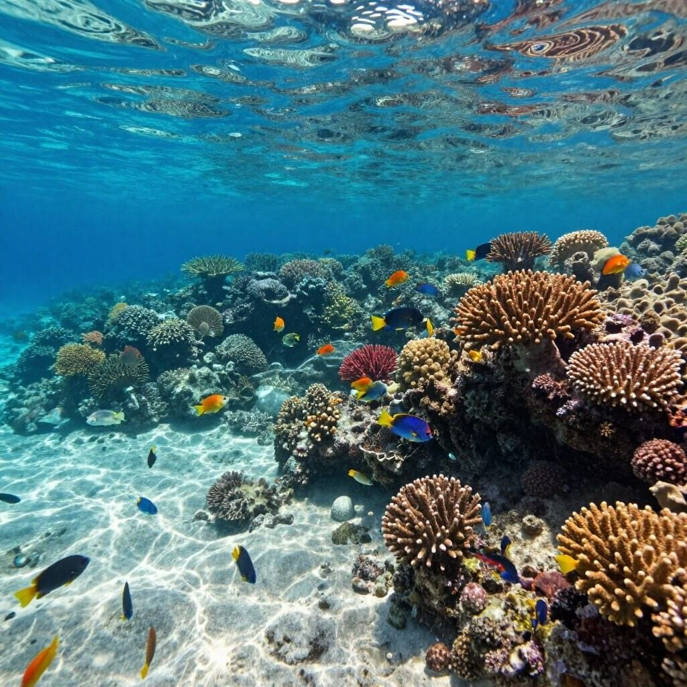

Informasi Penting
Kenali keindahan, peran, dan ancaman yang dihadapi ekosistem laut.

Apa Itu Ekosistem Kutub?
Ekosistem kutub merupakan lingkungan alam yang berada di sekitar Kutub Utara (Arktik) dan Kutub Selatan (Antarktika). Wilayah ini dikenal memiliki suhu sangat dingin, hamparan es, gletser, serta lautan yang menjadi habitat berbagai makhluk hidup.
Hewan seperti beruang kutub, penguin, anjing laut, dan berbagai organisme laut bergantung pada kondisi lingkungan kutub untuk bertahan hidup. Ekosistem ini memiliki peran penting dalam menjaga keseimbangan alam dan iklim bumi.
Es laut bukan hanya hamparan es biasa. Es tersebut menjadi tempat hidup, mencari makan, dan beristirahat bagi sejumlah satwa kutub.
Mengapa Wilayah Kutub Penting?
Wilayah kutub memiliki pengaruh besar terhadap sistem iklim bumi. Keberadaan es dan lautan di sekitarnya membantu mengatur suhu, memengaruhi sirkulasi laut, serta menyediakan habitat bagi berbagai organisme.
Mengatur suhu bumi
Permukaan es memantulkan sebagian energi matahari kembali ke atmosfer dan angkasa sehingga membantu menjaga keseimbangan suhu bumi.
Habitat Satwa Kutub
Es laut menjadi tempat mencari makan, beristirahat, dan berkembang biak bagi berbagai satwa kutub.
Menjaga Keseimbangan Laut
Proses pembentukan dan pencairan es laut memengaruhi sirkulasi air laut dan sistem iklim global.
Apa yang Mengancam Ekosistem Kutub?
Ekosistem kutub menghadapi ancaman akibat perubahan iklim dan meningkatnya suhu bumi. Kondisi ini menyebabkan berkurangnya es dan mengubah habitat berbagai satwa kutub.
Pemanasan Laut
Suhu laut yang terlalu tinggi dapat menyebabkan pemutihan karang (coral bleaching).
Pencemaran Laut
Sampah plastik dan limbah dapat mengganggu kesehatan ekosistem terumbu karang.
Aktivitas Manusia
Penangkapan ikan yang merusak, pengambilan karang, dan aktivitas yang tidak bertanggung jawab dapat merusak terumbu.